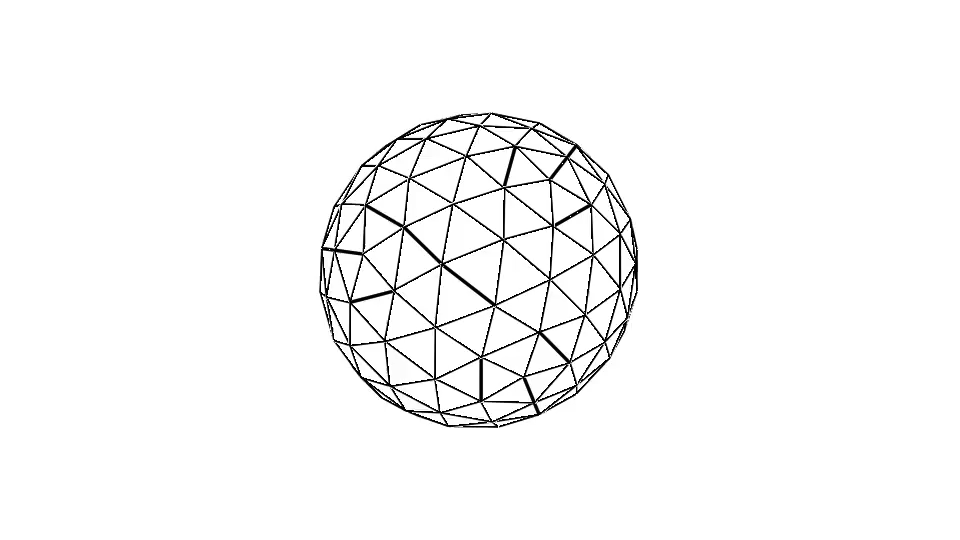

Magnetic liquid droplet in magnetic field
The behaviour of droplets under the action of magnetic fields of different configurations is an important issue in many domains, including microfluidics (Seeman et al. 2012), mechanics of tissues (Douezan et al. 2011; Frasca et al. 2014), studies of dynamic self-assembly (Timonen et al. 2013) and many others. After the successful synthesis of magnetic fluids in the late sixties by (Rosensweig 1985) an exciting story about droplets of magnetic fluid began. At first, the elongation of the droplets in an external field was observed and explained by Arhipenko et al. (1978). Later on, different droplet configurations were experimentally observed in the high-frequency rotating field, which was subject to our numerical study in [1].
Here I present the essential ingredients to reproduce the results of the paper with the new tools SurfaceTopology, LaplaceBIE and ElTopo (optional).
using LinearAlgebra
using GeometryTypes
using SurfaceTopology
using LaplaceBIE
using AbstractPlotting, GLMakie
# using ElTopoThe calculation requires normal vector and vertex areas methods. Latter one gives the area of 1/3 of the vertex ring, so the sum is the area of the droplet.
function normals(vertices,topology)
n = Point{3,Float64}[]
for v in 1:length(vertices)
s = Point(0,0,0)
for (v1,v2) in EdgeRing(v,topology)
s += cross(vertices[v1],vertices[v2])
end
normal = s ./ norm(s)
push!(n,normal)
end
return n
end
function vertexareas(points,topology)
vareas = zeros(Float64,length(points))
for face in Faces(topology)
v1,v2,v3 = face
area = norm(cross(points[v3]-points[v1],points[v2]-points[v1])) /2
vareas[v1] += area/3
vareas[v2] += area/3
vareas[v3] += area/3
end
return vareas
endThese are tools to keep track if the calculation is sensible. Since we are working in an incompressible fluid, the volume needs to be constant, and the energy of the droplet decreases until equilibrium is reached.
function surfacevolume(points,topology)
normal0 = [0,0,1]
s = 0
for face in Faces(topology)
y1 = points[face[1]]
y2 = points[face[2]]
y3 = points[face[3]]
normaly = cross(y2-y1,y3-y1)
normaly /= norm(normaly)
area = norm(cross(y2-y1,y3-y1))/2
areaproj = dot(normaly,normal0)*area
volume = dot(y1 + y2 + y3,normal0)/3*areaproj
s += volume
end
return s
end
function energy(points,normals,faces,psi,mup,gammap,H0)
vareas = vertexareas(points,faces)
Area = sum(vareas)
s = 0
for xkey in 1:length(points)
s += psi[xkey]*dot(H0,normals[xkey]) * vareas[xkey]
end
Es = gammap * Area
Em = 1/8/pi * (1 - mup) * s
return Es+Em
endFor calculating the equilibrium of the droplet, we use a curvatureless algorithm for a vicious droplet developed by Zinchenko 1997. He found a way to calculate velocity generated by a surface tension without explicitly calculating the curvature, which makes it easier to implement and from some tests also more stable. The following method accepts surface defined by points, normals and faces (or topology) and surface force as well as surface tension γ and viscosity η (which only affects the scaling of time).
function stokesvelocity(points,normals,faces,forcen,etaP,gammap)
vareas = vertexareas(points,faces)
velocityn = zeros(Float64,length(points))
for xkey in 1:length(points)
x = points[xkey]
nx = normals[xkey]
fx = forcen[xkey]
s = 0
for ykey in 1:length(points)
if ykey==xkey
continue
end
y = points[ykey]
ny = normals[ykey]
fy = forcen[ykey]
### Need to check a missing 2
s += vareas[ykey]*1 ./8/pi/etaP* dot(y-x,nx+ny)/norm(y-x)^3*(1-3*dot(y-x,nx)*dot(y-x,ny)/norm(y-x)^2) * gammap
s += vareas[ykey]*1 ./8/pi/etaP* ( dot(nx,ny)/norm(x-y) + dot(nx,x -y)*dot(ny,x-y)/norm(x-y)^3 )*(fy - fx)
end
velocityn[xkey] = s
end
return velocityn
endNow having methods defined, we can include a sphere and proceed with calculation.
include("sphere.jl")
msh = unitsphere(2)
vertices, faces = msh.vertices, msh.faces
# Now let's do something fun. Visualize the process with Makie in real time.
x = Node(msh)
y = lift(x->x,x)
scene = Scene(show_axis=false)
wireframe!(scene,y,linewidth = 3f0)
mesh!(scene,y, color = :white, shading = false)
display(scene)
# Initial parameters
H0 = [4.,0.,0.]
etap = 1.
gammap = 1.
μ = 10.
t = 0.
Δt = 0.1
N = 100
volume0 = surfacevolume(vertices,faces)
record(scene, "mdrop.gif", 1:N) do i # for i in 1:N
n = normals(vertices,faces)
psi = surfacepotential(vertices,n,faces,μ,H0)
P∇ψ = tangentderivatives(vertices,n,faces,psi)
Hn = normalderivatives(vertices,n,faces,P∇ψ,μ,H0)
E = energy(vertices,n,faces,psi,μ,gammap,H0)
rV = surfacevolume(vertices,faces)/volume0
@show E,rV
Ht = [norm(j) for j in P∇ψ]The force generated (M⋅∇)H, which includes a jump of magnetization at the surface and force coming from the whole bulk.
tensorn = μ*(μ-1)/8/pi * Hn.^2 + (μ-1)/8/pi * Ht.^2
vn = stokesvelocity(vertices,n,faces,tensorn,etap,gammap)
vertices .+= n .* vn * Δt
msh = HomogenousMesh(vertices,faces)
### ElTopo stabilization
# par = SurfTrack(allow_vertex_movement=true)
# msh = stabilize(msh,par)
push!(x,msh)
AbstractPlotting.force_update!()
global vertices, faces = msh.vertices, msh.faces
global t += Δt
end
Erdmanis, J. & Kitenbergs, G. & Perzynski, R. & Cebers, A. (2017) Magnetic micro-droplet in rotating field: numerical simulation and comparison with experiment